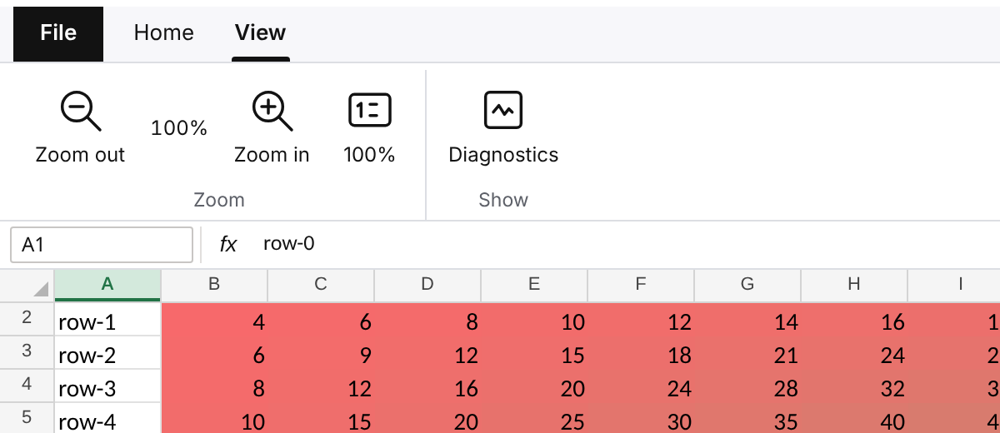
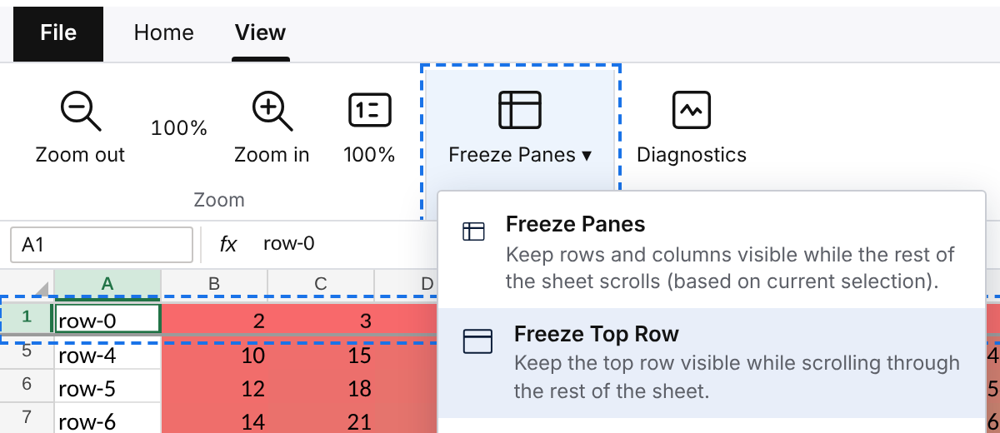
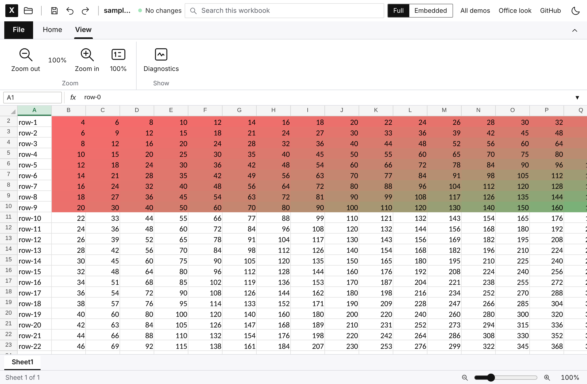
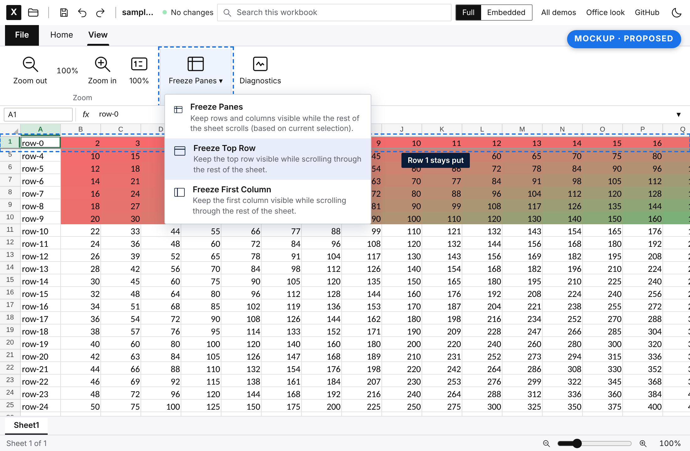

Freeze Panes: keep header rows and label columns in view while you scroll
Approved 2026-11-17; queued in the nightly backlog.
Approve: tap 👍 on the issue · Decline: tap 👎
Close-up of the change




Full screen


Today: after scrolling, row 1 and its labels are gone, and the View tab only has Zoom and Diagnostics.


Mockup: View > Window > Freeze Panes menu (Freeze Panes, Freeze Top Row, Freeze First Column); row 1 stays pinned above the scrolled rows.
Tap an image to open it full size.
Why
Freezing the top row is one of the first things people do in a real spreadsheet; without it, the column headings vanish as soon as you scroll. Nitro already reads, draws and saves frozen panes that come in a file, but users can't set or remove one, and the View tab has no Window group. A View > Freeze Panes menu matches Excel (Google Sheets has the same under View > Freeze).
Definition of done
- View tab gets a Window group with Freeze Panes ▾ (Freeze Panes at the selected cell, Freeze Top Row, Freeze First Column); it becomes Unfreeze Panes when a freeze is set. Home tab and the 2-row Font/Paragraph groups are untouched.
- Frozen rows and columns stay in view while scrolling by mouse, keyboard and scrollbars, with the freeze line drawn; selecting cells in the frozen area works.
- Undo/redo work; the saved file opens in Excel with the same freeze and no repair prompt (round-trip tests with and without an existing pane).
- Playwright test: Freeze Top Row, scroll 40 rows, row 1 still visible; bundle-budget and all required checks green.
Approve: tap 👍 on the issue · Decline: tap 👎